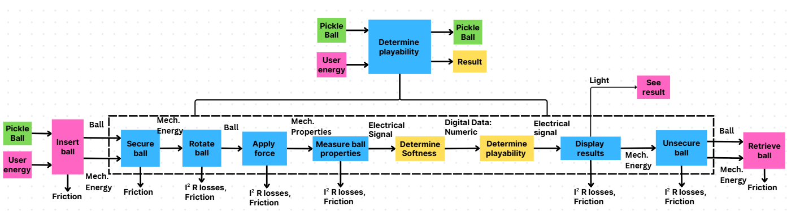
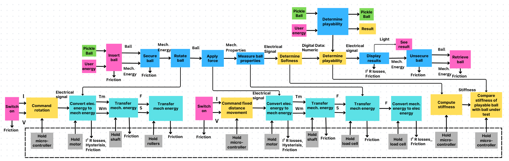

Gate Review 2 · Concept & Prototyping
Functional Decomposition
Before choosing any mechanism, the team described what a ball tester must do. At the top level it has one job, determine playability: a pickleball and the user's effort go in, and the same ball, undamaged, comes out with a result.
The solution-neutral decomposition

Color key. Green: the ball (material). Pink: user actions and user energy. Blue: primary functions. Yellow: signal and information processing. Arrows are labelled with the flow they carry.
Major functions and flows
The main chain follows the ball: insert, secure, rotate, apply force, measure properties, determine softness, determine playability, display result, unsecure, retrieve. Three flows run through it.
- Material. The ball is inserted, held, rotated, compressed, and returned undamaged.
- Energy. The user supplies energy to insert and retrieve the ball and to switch the device on. Inside the boundary, mechanical energy secures, turns and compresses the ball.
- Signal. The ball's mechanical response becomes an electrical signal, then numeric data, and leaves the system as light from the display, which the user reads.
The DinkCheck decomposition

After concept selection, the team expanded three functions to match the chosen principle. Electrical energy is converted to mechanical energy twice: once to turn the rollers, and once to drive a fixed-distance compression. The resulting force is converted back to an electrical signal, the controller computes stiffness, compares it with a playable reference ball, and sends the result to the display. Auxiliary functions hold the motors, shaft, rollers, load cell and controller in alignment, and switch the device on.
What changed after concept selection, and why
- “Rotate ball” was added. Squeezing deforms the shell locally, and published wear tests found that stiffness began to depend on ball orientation after about three hours of play [1], so one squeeze can miss a soft spot.
- “Apply force” became “command fixed-distance movement.” Displacement control suits a stepper motor, makes stiffness simple to compute, and limits how far the ball is deformed.
- The sensing chain was expanded into convert mechanical to electrical energy, compute stiffness, and compare with a playable ball, reflecting the choice of a load cell and grading against a reference ball.
Functions that matter most
Customer value. Measure ball properties, compute stiffness and compare with a playable ball deliver the two needs players rank first: consistent performance (52.8% rank it first) and confidence in the ball (52.8% rate their confidence 3 or lower of 7) [2]. Command fixed-distance movement sets repeatability and caps the squeeze so the ball is not damaged. Rotate ball decides whether a local soft spot is found.
Technical feasibility. The hardest functions are separating ball deflection from flex in the load cell and rollers, detecting first contact accurately, rotating a ball full of holes without slip, and defining a reliable reference ball at the test temperature.
Losses, hazards and inefficiencies
| Type | Where it occurs | Mitigation |
|---|---|---|
| Friction | Lead screw, guide rods, shafts and rollers; inserting and retrieving the ball | Linear bearings on the guide rods; flanged bearings on the roller shafts |
| Electrical (I²R) and hysteresis losses | Both motors and the load-cell circuit | Reduced motor current when idle |
| Measurement error | Flex in the load cell and roller sleeves added to ball deflection | One compliance calibration with a steel ball |
| Pinch point | Between the moving plate and the cradle | Mechanical hard stop; plate moves only after the start button |
| Overload | A cold or cracked ball squeezed too far could crack further or overload the load cell | Software force limit and a hard stop that caps travel at 5 mm |
Table 4. Losses, hazards and their mitigations.
How decomposition generated alternatives
Splitting the problem into solution-neutral functions let the team generate options for each function separately and then combine them, rather than starting from one device.
| Function | Options considered | Chosen | Why |
|---|---|---|---|
| Secure ball | Clamp, flat seat, O-ring seat, roller cradle, retaining cylinder | Roller cradle | Clamping pre-loads the ball and biases the reading; a roller cradle holds and turns it |
| Rotate ball | Manual, turntable, two rollers, omni-wheels, swerve drive | Two rollers | A turntable only spins the ball about the squeeze axis, so the plate keeps touching the same points; omni-wheels could roll it about two axes but are too complex for this semester |
| Apply force | Manual lever, toggle clamp, lead-screw stepper | Lead-screw stepper | Repeatable, automated travel |
| Control mode | Fixed force, fixed displacement | Fixed displacement | Suits a stepper and limits deformation |
| Sense | Force-sensitive resistor (FSR) pad, load cell, acoustic tap | Load cell | An FSR varies by ±6% part to part even under a controlled load [3], too close to the ~10% softening per hour the device must detect [1]; an acoustic tap is better suited to finding cracks |
| Decide | Absolute threshold, ratio to a reference ball | Ratio | Cancels fixture and material differences between ball models |
Table 5. Options generated for each function and the choice made in the selected concept.
Subsystems in the selected concept, and how they satisfy each function
Six subsystems emerged: ball handling (insertion cavity, rollers and rotation drive), compression actuation (stepper, lead screw, guide rods, carriage and top plate), force sensing (load cell and amplifier), control and computation (a microcontroller that counts steps to get displacement, detects contact, computes stiffness and grades the ball), user interface (button and display), and power and structure (12 V supply and aluminium frame, which carry the hold functions).
| Required function | Satisfied by |
|---|---|
| Insert, secure, unsecure, retrieve ball | Open insertion cavity above the roller cradle |
| Rotate ball | Roller drive under microcontroller command |
| Apply force (fixed distance) | Stepper and lead screw; displacement from the step count |
| Measure properties | Load cell (mechanical to electrical) and amplifier |
| Determine softness and playability | Microcontroller: stiffness = force ÷ deflection, compared with the reference ball |
| Display results | OLED display |
| Hold (auxiliary) | Frame and mounts for the motors, shafts, rollers, load cell and controller |
Table 6. How the DinkCheck architecture satisfies each required function.
References
- [1] Pickleball Science, “How Many Games Will a Pickleball Last?” Mar. 15, 2023. pickleballscience.org
- [2] Team 1, “Activity 10a: Consumer Survey,” ME 455, 2026 (n=36 responses). See Market Research.
- [3] Interlink Electronics, “FSR 400 Series,” product specifications (part-to-part force repeatability, single batch). interlinkelectronics.com